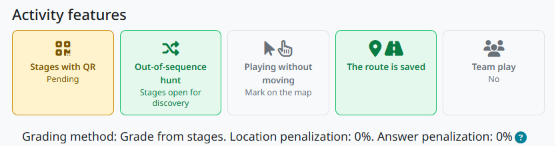
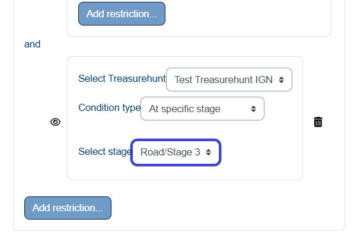
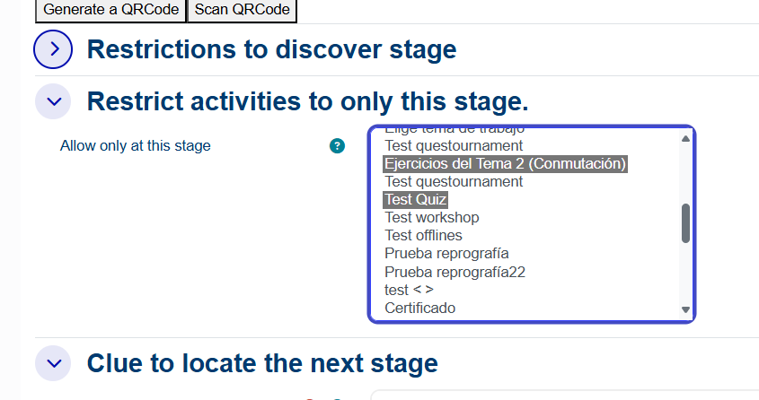

Before you install
You need administrator access to the Moodle site. Check the plugin’s current compatibility and release information on Moodle Marketplace for your own Moodle version. The browser player needs a secure HTTPS origin for reliable location and camera permission prompts.
Installation steps
- Download mod_treasurehunt from Moodle Marketplace or the source repository. Install through Site administration → Plugins → Install plugins, or place the package in
mod/treasurehunt. - Visit Moodle administration and complete the database upgrade prompted by Moodle. Confirm that Treasure Hunt appears under activity modules.
- Review the activity defaults in the plugin settings. If you plan to use Europeana in the OpenData assistant, configure its API key; Mapbox imagery needs its own access token.
- Create a test course activity. Add a road, two stages and geometry to both stages, validate the road, then use the teacher Preview action.
Add it to a course
Enable editing in your course, add an activity or resource, choose Treasure Hunt and complete the general options. Set availability and grading as you would for other Moodle activities. In a team hunt, create Moodle groups and groupings and assign a grouping to each road before students begin.

Grading and optional integration
Choose a grading method based on stages completed, hunt duration, finishing time or ranking, then adjust penalties for incorrect locations or answers if they fit your learning goals. The plugin also integrates with the Moodle Mobile App; the browser player is available without installing it.
Availability by Treasurehunt status
The optional Availability by Treasurehunt status plugin adds a Moodle access restriction that unlocks a resource or activity when a learner meets a Treasure Hunt progress condition. Teachers can require a minimum number of discovered stages, a minimum playing time, completion of the whole hunt (independent of Moodle activity completion), or discovery of a particular stage. In the course editor, add a restriction under Restrict access, select Treasurehunt, then choose the hunt and condition.


See the Moodle Marketplace listing and the source repository for installation details.
Continue
Follow the activity creation tutorial, then review GPS and camera troubleshooting.